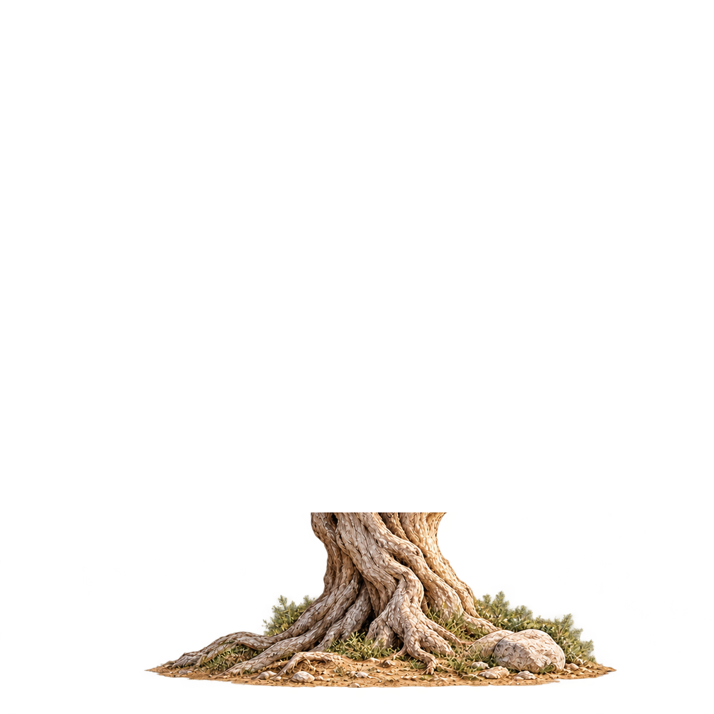

Lichtkrone · Stufe 7 · isolierte Studie
Ein Baum, verbunden.


Eine gemeinsame Zeichnung. Kleine Blattbewegungen.
Bild wird vorbereitet.
Manueller Start, ein Durchlauf, kein dauerhaftes Wackeln. Reduced Motion und fehlende Sichtbarkeit stoppen die Bewegung. Früchte bleiben in derselben Zeichnung wie ihre Stiele. Diese Vorschau speichert nichts.
Ebenen und Grenzen ansehen ↗